2024年01月
1ヶ月って早い。明日から2月。大学生の折り返しまでもう少し。
1月を振り返ります。
今月の週報
GitHub
去年は新歓パンフレットフル稼働で640とか行っていて凄まじかった。今年はまあ普通、日報を含むことを踏まえるとやや少なめ。
秋Bのレポートを1月まで持ち越したせいで秋Cの課題も遅れを取っていて、1月末にようやく追いつけてきている...という状態なのでプログラミング自体にあまり時間をかけられていない。
主に大学課題が中心で、趣味プロでBrackを書いていた。
秋C集中でバイオインフォマティクスという授業を取ってCLI/Rで細胞の推定をする実験に取り組んだりした。かなり楽しかったが期末レポートで生物の知識を要求されたので苦しめられた。
大学
秋Bの期末レポートを片付けた。その後、2週間くらいして成績が開示されたが結果から言うとめちゃくちゃ上振れていた。
理解が追いつかなかった並列アーキテクチャIIや遅刻を何度かした体育、期末試験がびっくりするくらい解けなかったCG基礎など、問題科目を揃えてしまったので今回ばかりは本当にダメだと思っていたが、蓋を開けてみると4.17もあった。運が良かったとしか思えない。ただ試験勉強はしたのでやった自分を褒めたい & 付き合ってくれた友人に感謝...
秋Cにも既にレポートの結果が散々なDSA実験、全然ついて行けていない情報システム特別講義Aなど怖い科目は残っているのでB2終了まであと少し、がんばろうと思う。
論文
結局今月は2回くらいしか読まなかった。酷い
ただ、まあ日報を急に戻したり、早寝早起きが若干習慣づいてきたり、コアタイムに大学に来るようにしたり、お弁当を作って持っていけるようになったり[1]したので、去年に比べて大成長とも捉えられる[2]
全然できなかったシリーズで言うと英語もあり、これらは本当にできるようになりたい。まあこの調子でちょっとずつでも出来ることを増やしていきたい 継続ってやつがトレンド
音楽
Last.fmを毎月貼っていく
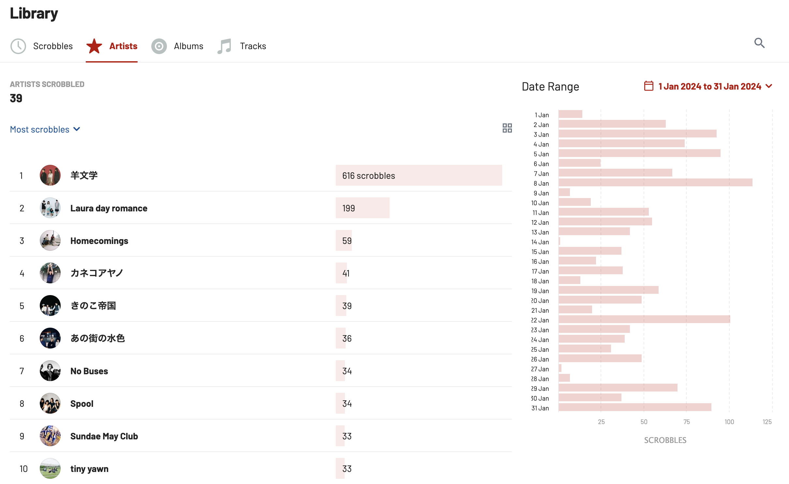今も聴いているから多分ブレるんだけど、1428 scrobbles。
やはり羊文学。これを書いている今日にライブ音源が公開されて最高だった。すぐに2周した。ライブ音源って本当に幸せになれる、贅沢
Laura day romanceもかなり聴いた。「wake up call | 待つ夜、巡る朝」がMV含めて最高なんだ...
Spoolは多分今月初めて聴いたバンドだと思う。とてもシューゲ。シューゲが大好きです
今月のプレイリスト。最近はkurayamisakaにお熱、Laura day romanceとNo Basesをもっと聞きたい、という感じなので来月はそんな感じになると思う。たのしみ
生活
上手くいっていた！かなりね。
眠剤で強制的に眠れるというのが間違いなく1番大きいのだけれど、それでも意思を強めたり友達と約束して大学に来たり、お弁当について話し合ったり、vlogを撮ってみたり、いろいろな工夫が功を奏していた。問題は飽きっぽいことで、継続が苦手な原因なのだけれど、続けることに対して人生史上最もやる気を出しているので細々とやっていきたい。
最近できた友達がお弁当を作っているので影響されて作り始めた。まだ簡単なものしか作れなくて、親の凄さ、ありがたみみたいなのを改めて実感している。
習慣化
かなり恥ずかしいので外に出したくなかったのだけれど、できるようになりたいなあとは思っているので振り返っておく
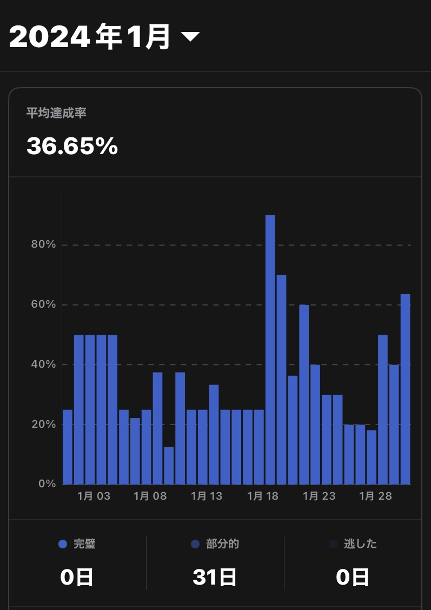達成率は全体の36.65%。まあ低いのだろうけどHabitifyを継続して使えたことがこれまで全然なかったので分からない。継続できただけでも良かったなあくらいの気持ちでいる
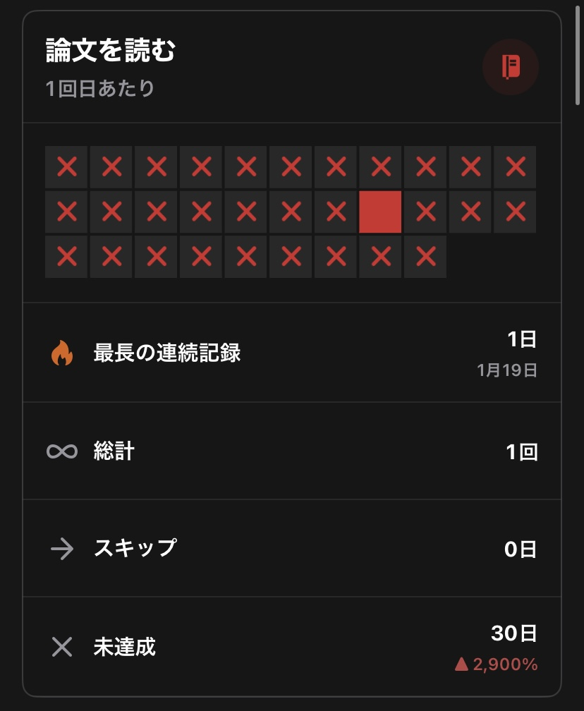論文を読んだのは31日中1日でした
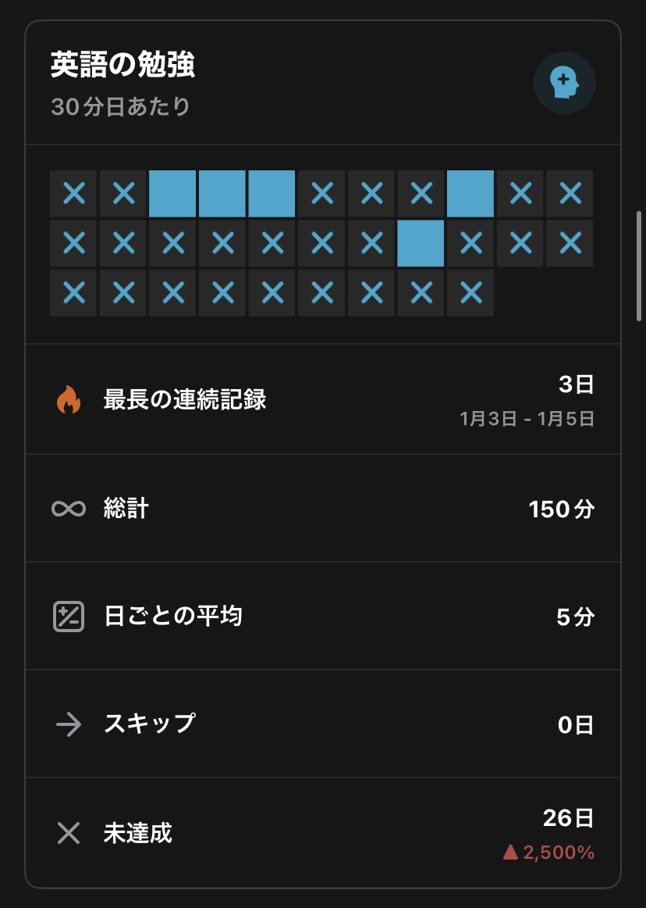英語を勉強したのは31日中5日でした
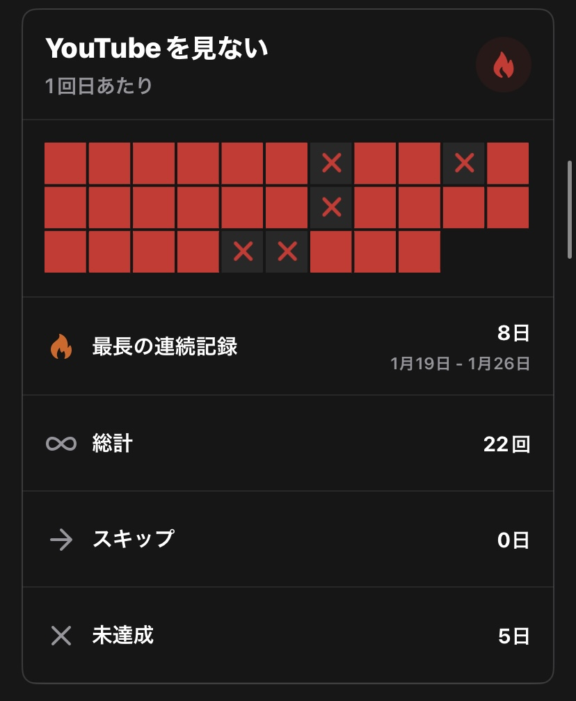YouTubeを見なかったのは31日中27日でした
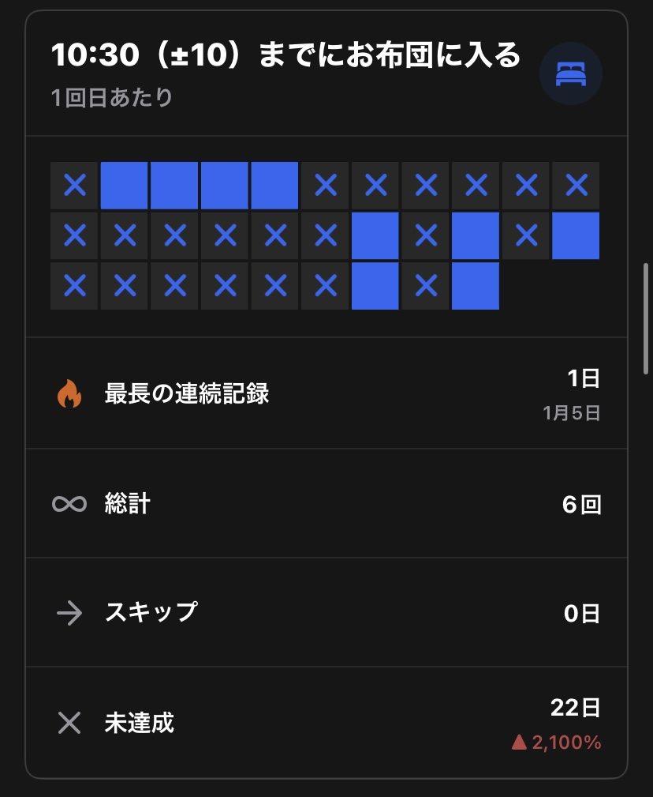10:30までにお布団に入った日は31日中9日でした
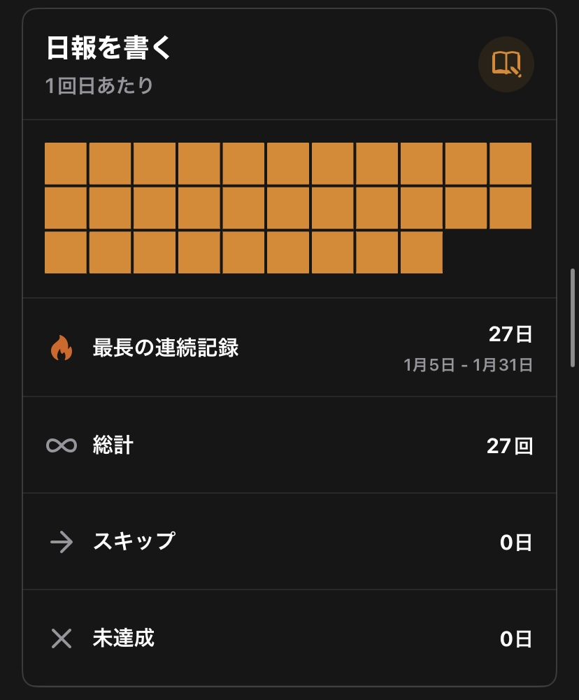日報は31日全部書けました
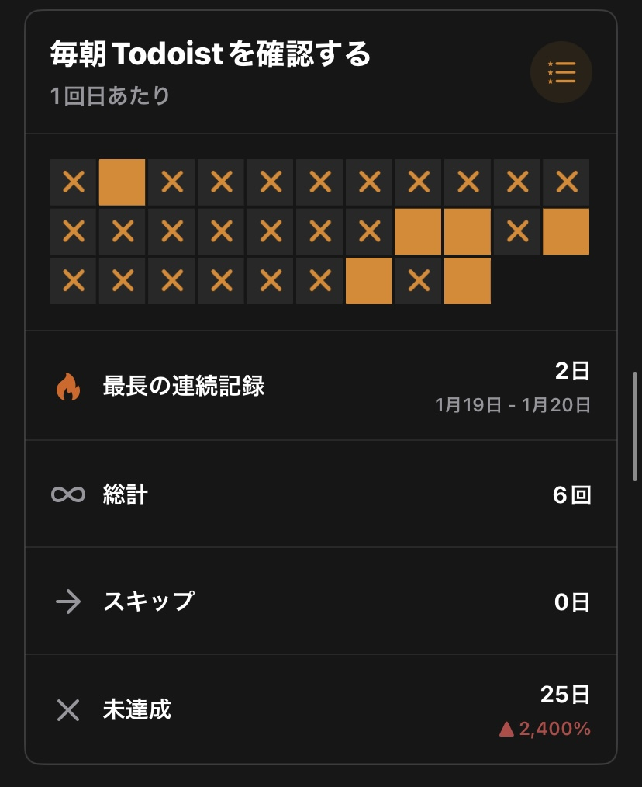Todoistを確認した日は31日中6日でした
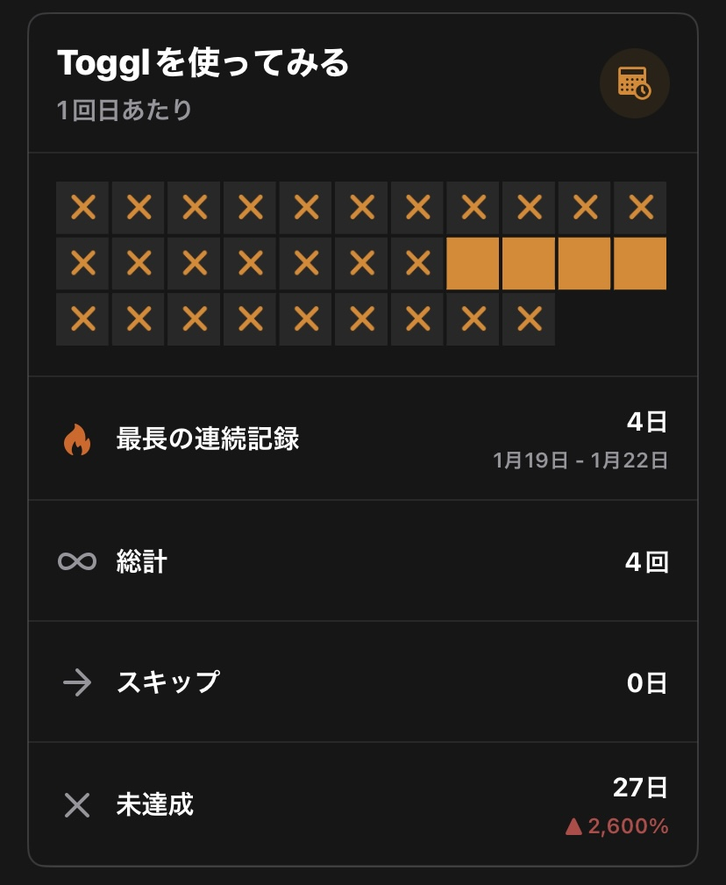Togglを使った日は31日中4日でした
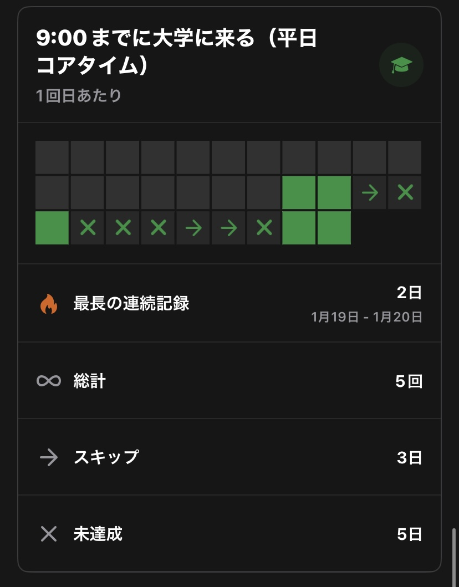9時までに大学に来た日は13日中5日でした（スキップ3日）
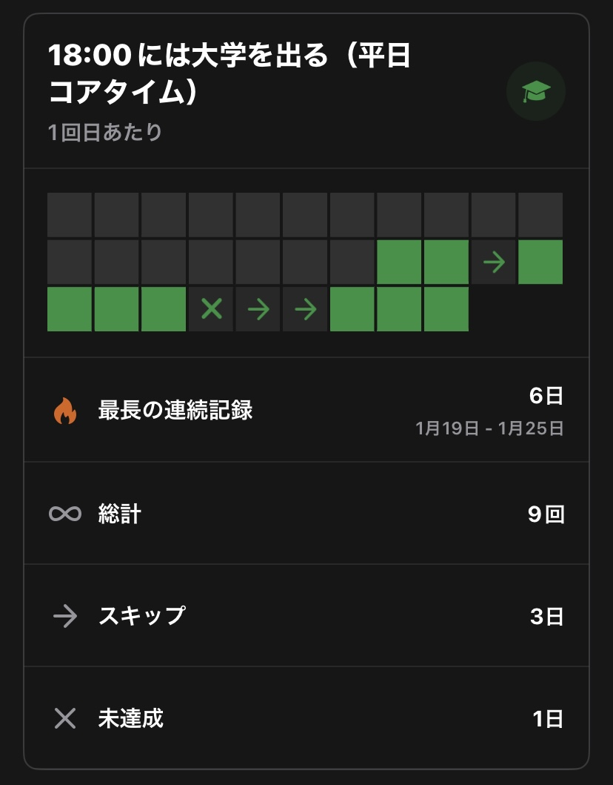18時まで大学にいた日は13日中9日でした（スキップ3日）
コアタイムを勝手に導入した。コアタイムというのは研究室によっては設定されている平日の特定の時間は研究室にいなければいけませんよ、というルールで、僕は授業の有無に関わらず平日は9時から18時までは大学にいなければいけないということにしている。導入した結果、早寝早起きがかなりスムーズに行くようになった。最近は調子に乗ってお弁当まで作っている。
論文とか英語とか、10:30までにお布団に入るのとかは昔から何度もやろうとして上手くいかなかったことなので地道にできる日数を増やしていきたい。今月は日報とYouTubeを見ないこと[3]を頑張れたな〜と思うので、それを維持しつつ来月は早寝とか、TodoistとかTogglとか出来そうな項目を目指していきたい 高みだね
目標
去年の1月の月報を見ると
先月の週報で立てていた目標は雰囲気で毎回考えていたけど、今月からは月報で立てた大きめの目標を分割してクリアしていく感じにしたい。初めて試すので、上手くいかなかったらまたやり方を考えようと思う。
と言っている。分割すること自体は間違えてなくて、目標が高すぎたことで折れてモチベーションをなくすのが良くなかった気がする。月報が続かなかった理由も書きながら見に染みて感じていて、1ヶ月分の行動を振り返って目標を立てるって結構しんどい作業みたい。これで全然達成できてなくて辛い気持ちになるだけならそりゃ続かないと言う感じがする
ちょっと頑張ったら達成可能な目標を置くのがよさそう。それを考えるのが難しいんだけど...
- 秋GPA、4.1を切らないように課題をがんばる
- brack-lang/std.htmlを使えるようにする
- brack-lang/std.jsonを作る
- blog.momee.mt 式年遷宮2024を進める
- GitHub 300 contributions目安にコードを書く
- FFmpegのソースを読む / できそうなIssueを定める
- GSoCのapplyを書き始める
- お弁当を作る
- vlogを1本は編集する
- 習慣化 達成率50%を目標にする
- 論文/英語、15日以上を目標にする
- YouTube、1日も見ないようにする
- 10:30睡眠、15日以上を目標にする
- 日報、毎日書く、遅れず書く
- Todoist、20日以上を目標にする
- Toggl、20日以上を目標にする
- 9時までに大学に来る、15日以上を目標にする
- 18時まで大学に残る、20日以上を目標にする
- Twitter、25日以上見ないようにする
- libpure、アセンブリの勉強を進める
- 聞いたことないジャンルの曲も聴いてみる
- 青森に行く
- ARKitを試す、physical-book-arを進める
- The Rust Programming Languageを読む
- Tokioチュートリアルを読む
- Rust By Exampleを読む
- ハンズオンWebAssemblyを読む
- Neovimを使う頻度を増やす
なんだか結局いっぱいになってしまった。去年みたいに完全に無理そうな目標は控えめにしたつもりなのでほどほどにがんばりたいな〜
来月も良い月でありますように、日報書くの疲れた。あと5分で寝ないとダメなので寝る
- まだ2日しか持っていっていないという見方も
- 落ち込むのは平時からやっているので振り返りくらいは肯定的に捉えたい
- これ、今までこんなに抑えられたことがなかったので本当に自分を褒めたい。あと最近は依存から少し抜けているのか関心も失っている。代わりに好きな芸人さんのラジオを聴くようになったけど、作業しながら聴けるのでYouTubeよりかなりマシだ。